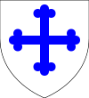

Aged 73
Aged 5
Aged 50
Aged 66
1000–1014 (14)
Inbreeding: 0%
In 988 he married fifteen-year-old Amica; loving union produced four children, of which three survived:| Name | Prt. | CoA | Lifespan | Notes |
|---|---|---|---|---|
| Agnes | |
992–1065 Aged 73 |
||
| Arnold | 998–1003 Aged 5 |
|||
| Rochilda | |
1000–1050 Aged 50 |
||
| Aldiva | |
1003–1069 Aged 66 |
1014–1017 (3)
Inbreeding: 0%
In 989 he married fifteen-year-old Christiana; happy union produced three sons, yet only one survived:| Name | Prt. | CoA | Lifespan | Notes |
|---|---|---|---|---|
| Letard II |  |
 |
992–1046 Aged 54 |
Married Agnes Bruton in 1009
|
| Gregory |  |
994–1010 Aged 16 |
||
| Jocelyn | 999–1001 Aged 2 |
1017–1046 (29)
Inbreeding: 0%, 1
In 1009 he married twelve-year-old Agnes Bruton; miserable union produced eight children, of which five survived:| Name | Prt. | CoA | Lifespan | Notes |
|---|---|---|---|---|
| Rose | |
1017–1037 Aged 20 |
Married Christopher Spilsby in 1034
| |
| Lucia | |
 | 1020–1074 Aged 54 |
Married Martin Chapel in 1034
|
| Runild | 1022–1077 Aged 55 |
Husbands:
| ||
| Letard III | |
|
1023–1072 Aged 49 |
Married Joan Gateshead in 1042
|
| Gregory | 1026–1029 Aged 3 |
|||
| Jocelyn |  |
1028–1045 Aged 17 |
||
| Gregory | 1033–1036 Aged 3 |
|||
| Edward | |
1035–1094 Aged 59 |
Wives:
|
1046–1072 (26)
Inbreeding: 0%, 2
In 1042 he married thirteen-year-old Joan Gateshead; wedlock produced three children, yet only one survived:| Name | Prt. | CoA | Lifespan | Notes |
|---|---|---|---|---|
| Letard | 1045–1047 Aged 2 |
|||
| Rose |  |
1050–1099 Aged 49 |
Married Solomon Macclesfield in 1064
| |
| Jocelyn | 1051 Aged 0 |
1072–1094 (22)
Inbreeding: 0%, 2
In 1062 he married twenty-year-old Ragenild Chapel; wedlock produced a daughter, but she didn't survive:| Name | Prt. | CoA | Lifespan | Notes |
|---|---|---|---|---|
| Lucia | 1063–1070 Aged 7 |
| Name | Prt. | CoA | Lifespan | Notes |
|---|---|---|---|---|
| Rose | |
 |
1085–1136 Aged 51 |
Married Turbert Dover in 1098
|
| Gregory I | |
1088–1146 Aged 58 |
Married Margery Thorpe in 1109
|
1094–1146 (52)
Inbreeding: 0%, 3
In 1109 he married fourteen-year-old Margery Thorpe; happy union produced fourteen children, yet only five survived:| Name | Prt. | CoA | Lifespan | Notes |
|---|---|---|---|---|
| Rose | 1115–1116 Aged 1 |
|||
| Letard IV |  |
1116–1177 Aged 61 |
Wives:
| |
| Rose | 1117–1127 Aged 10 |
|||
| Runild | |
1118–1195 Aged 77 |
||
| Lucia | 1121–1135 Aged 14 |
|||
| Alviva | 1123–1125 Aged 2 |
|||
| Jocelyn | 1125 Aged 0 |
|||
| Alviva | 1126–1129 Aged 3 |
|||
| Jocelyn |  |
1127–1177 Aged 50 |
Married Ailova Bromyard in 1145 | |
| Gregory | 1129–1134 Aged 5 |
|||
| Alviva | |
1130–1180 Aged 50 |
||
| Rose | |
1131–1173 Aged 42 |
Married Ringer Essex in 1160
| |
| Edward | 1133–1140 Aged 7 |
|||
| Gregory | 1136 Aged 0 |
1146–1177 (31)
Inbreeding: 0%, 4
In 1134 he married his cousin, thirteen-year-old Alice Dover; marriage produced six children, of which four survived:| Name | Prt. | CoA | Lifespan | Notes |
|---|---|---|---|---|
| Gregory II | |
1144–1197 Aged 53 |
Married Gunnora Essex in 1163
| |
| Jocelyn | 1145 Aged 0 |
|||
| Runild | 1146–1152 Aged 6 |
|||
| Rose | |
|
1149–1215 Aged 66 |
Husbands:
|
| Lucia | |
1152–1176 Aged 24 |
Married Osmer Ottery in 1166
| |
| Letard | |
1154–1216 Aged 62 |
Married Agnes Dundee in 1180
|
1177–1197 (20)
Inbreeding: 20%, 5
In 1163 he married fifteen-year-old Gunnora Essex; happy matrimony produced three children:| Name | Prt. | CoA | Lifespan | Notes |
|---|---|---|---|---|
| Letard V | |
1171–1229 Aged 58 |
Married Alice Ottery in 1191 | |
| Alviva |  |
1176–1238 Aged 62 |
Married Richeman Bromyard in 1191
| |
| Jocelyn | |
1182–1203 Aged 21 |
1197–1229 (32)
Inbreeding: 13%, 5
In 1191 he married his cousin, fifteen-year-old Alice Ottery; couple was childless.1229–1257 (28)
Inbreeding: 7%, 5
In 1217 he married fifteen-year-old Lucia Gateshead; happy wedlock produced three daughters:| Name | Prt. | CoA | Lifespan | Notes |
|---|---|---|---|---|
| Lucia |  |
1222–1272 Aged 50 |
Married Ringer Essex in 1242
| |
| Runild | |
1227–1283 Aged 56 |
Married Hamon Potton in 1241 | |
| Rose | |
1242–1298 Aged 56 |
Married Geoffrey Essex in 1255
|
1257–1278 (21)
Inbreeding: 20%, 5
In 1253 he married twenty-two-year-old Patronilla Essex; happy couple produced eight children, of which five survived:| Name | Prt. | CoA | Lifespan | Notes |
|---|---|---|---|---|
| Alviva | 1254 Aged 0 |
|||
| Letard VII | |
1255–PRSN Aged 44 |
Married Gunnilda Totton in 1273
| |
| Rose | |
1256–PRSN Aged 43 |
||
| Jocelyn | 1257–1263 Aged 6 |
|||
| Edward | |
1259–PRSN Aged 40 |
Wives:
| |
| Lucia | |
1260–PRSN Aged 39 |
||
| Alviva | |
1262–PRSN Aged 37 |
Married Michael Essex in 1281
| |
| Jocelyn | 1263–1264 Aged 1 |
1278–PRSN (22)
Inbreeding: 13%, 5
In 1273 he married thirteen-year-old Gunnilda Totton; happy matrimony produced four children, but none survived:| Name | Prt. | CoA | Lifespan | Notes |
|---|---|---|---|---|
| Lucia | 1287–PRSN Aged 12 |
|||
| Alviva | 1288–PRSN Aged 11 |
|||
| Letard | 1296–PRSN Aged 3 |
|||
| Rose | 1297–PRSN Aged 2 |